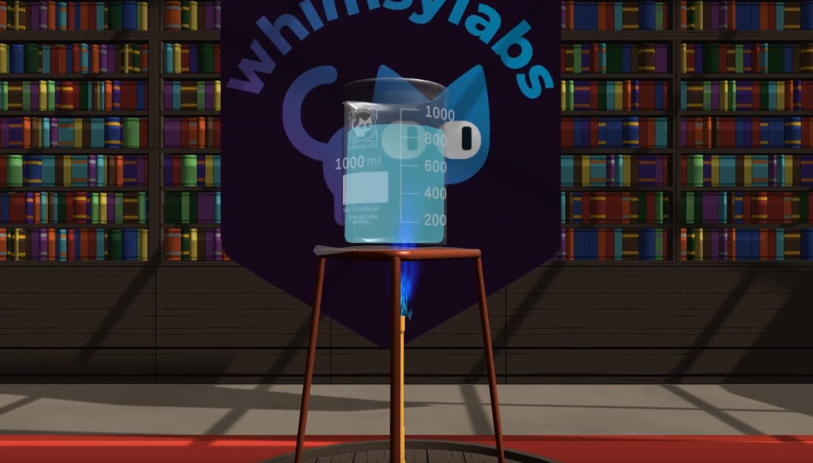
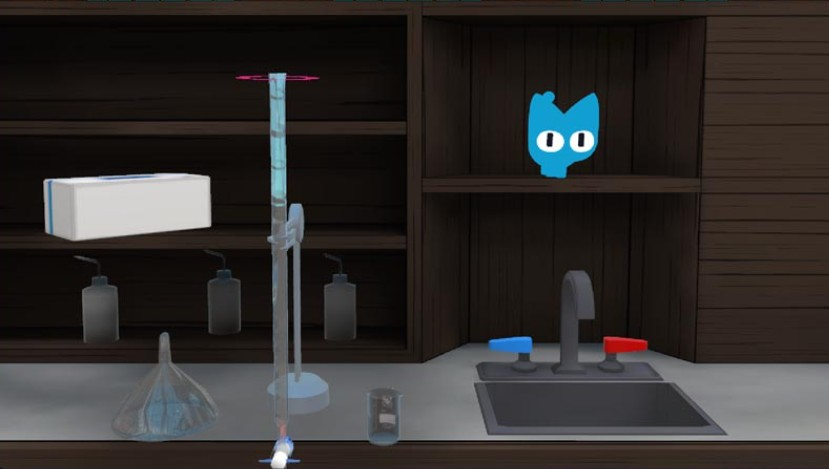
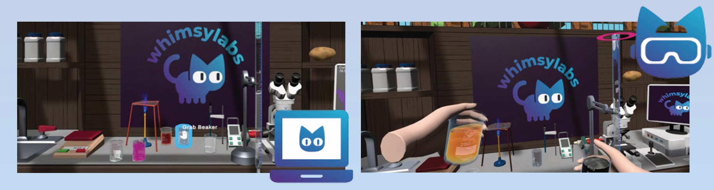

Click to watch the lab in action See the physics engine, the sandbox and the assessment working together. Two minutes. youtube.com/watch?v=9D2e2e2gzvk
Most virtual labs are sold as a substitute for a laboratory. Ours does that, but the second use is the one schools tend to underestimate.
Students on the UK, Middle East and South-East Asia timetables all run the same practical, at home, on hardware they already own. No travel, no scheduling around a campus, and no cohort excluded by geography. Because the simulation is physics-driven rather than scripted, what they build is genuine procedural skill, and we can evidence it, because we record what they physically did, in what order, and how well.
When pupils do get into a physical lab, they can arrive having already run the procedure end to end. They know the sequence, the apparatus, the hazards and the PPE. The health and safety learning is pre-loaded before anyone touches glassware.
That changes what a lab session can be. Instead of spending it on briefing, demonstration and safety instruction, you start at hands-on method, so the same slot supports something broader, more open-ended, and more genuinely investigative. Students have already made their mistakes somewhere those mistakes were free.
The simulation replicates the chaos and weight of the real world, temperature perturbations, reagent impurities, and deviation between samples. Whether a student is pouring titrant in VR or focusing a microscope on a Chromebook, fine motor control and procedural accuracy are what produce the result.
Drop a beaker and it breaks. Overheat a compound and it reacts. That freedom to fail builds resilience and a genuine understanding of laboratory risk.
Further reading: Physicality in Virtual Labs · Why Other Virtual Labs Fail: The Physics Engine Solution · Sandbox Learning: Why Freedom to Fail Is Essential
We track physical inputs inside the lab, equipment handling, technique, sequence, reaction times, and grade against them. Every student’s reagents carry slightly different concentrations and impurities, so every student has a different correct answer.
Follow-up questions are tied to their own data: “why does your graph show an unexpected peak?” A chatbot can’t answer that, because it doesn’t know they skipped rinsing the burette three steps earlier. That is what makes the platform safe to set as unsupervised homework.
Further reading: OECD: Grade the Process, Not the Product · Grading the Process, Not the Answer · 94% of Students Use AI for Assessed Work, Not the Problem · When AI Misreads “At Least One”
Our tutor infers a student’s understanding entirely from their actions in the lab. Pupils never type a prompt and never receive generated text.
There is no free-text surface to safeguard, no generated content reaching a child, and nothing to prompt-inject. That is a materially easier system to sign off against the DfE’s AI safety expectations than a chat-based tutor.
Both the AI grading and WhimsyCat are live from day one of the pilot. Both are also the parts of the platform we most expect to tune in response to what your teachers tell us , the design principles above are settled; the thresholds, prompts and weightings are deliberately not.
Further reading: How WhimsyCat Meets the DfE AI Safety Standards Without a Chat Box · WhimsyCat Detects and Responds to Student Frustration · The Chatbot Reckoning: What 2026’s Lawsuits Mean for School AI

All four disciplines live in the same simulation, with real interactions between them , an electronics fault behaves like an electronics fault when it’s wired into a chemistry rig.
Students can combine any reagent with any apparatus to test their own hypothesis, not just the steps a designer anticipated. Curiosity-driven work, safely contained.
Mistakes propagate the way they do on a real bench. Contaminate a sample and the analysis shows artefacts; add acid too fast and the pH overshoots. Students diagnose their own errors.
Fully simulated hazard labelling, safety equipment and cleanup. Safety behaviour is observed and scored, not assumed, so pupils who later enter a real lab arrive already briefed.
Skill mastery and safety assessed in real time, with a quick or detailed per-student breakdown across procedure, safety, data collection and scientific communication. Live from day one of the pilot, and tuned through the year on your feedback.
Because every student’s data set is unique, answers can’t be shared or generated. This is what makes the platform safe to set as unsupervised homework.
Roughly 3.5 hours per teacher per week recovered from lab setup, observation, cleanup and grading, time that goes back into live teaching.
A real-time view of performance rather than grades alone. Struggling students surface early; reports export, or feed your LMS from individual pupil up to whole-region view.
Paste a protocol in plain English and get a working lab scenario in minutes, equipment, reagents, reactions, objectives and assessment criteria. Not in the first year: 2026/27 is dedicated to landing your practicals properly.
Labs built by educators shared across the WhimsyLabs community, browse, adapt, contribute back. Follows the Experiment Builder, since it depends on it.
96.66% device compatibility, down to basic Chromebooks with 4 GB RAM. Browser-based, with VR an optional enhancement rather than a dependency.
Where a pupil already owns a VR headset, their school licence covers them using it at home for homework and practicals. You get immersive delivery for the students who can take it, without buying hardware. Desktop leads on features; VR follows slightly behind.
Full control remapping, text-to-speech, and self-paced modes for SEND learners. A low-bandwidth mode keeps sessions running on unstable home connections.
Students on the UK, Middle East and South-East Asia timetables work at different hours. WhimsyCat is available whenever they are, with personalised daily recommendations that keep asynchronous learners on track without a teacher online at 3am.
We expect your DPO’s questions and we’d rather answer them early than late. Because WhimsyCat has no pupil chat surface, there is no free-text student input to store, review or leak in the first place, the smallest data footprint of any AI tutor category.
Full Learning Tools Interoperability support, including Blackboard and Canvas, so assignment and grade flow sits inside your existing stack.
Students earn free points for safety and accuracy, spent on customising their virtual workspace. Intrinsic motivation, with no predatory engagement mechanics.
Built against the required practicals mandated by AQA, Edexcel, OCR and Cambridge International, GCSE through A-Level and international equivalents.
Pioneer schools get direct access to our development team to request specific apparatus, the mechanism behind the delivery plan later in this pack.
Biology • Chemistry • Physics • Electronics
All disciplines in the same simulation, on VR headsets and desktop, Chromebook, Mac, PC.
The virtual lab market splits into three categories, and the dividing question is simple: what happens when a student does the experiment wrong? Video tools show a recording, watching a titration is not performing one. Guided step-by-step simulations, walk students along a predetermined sequence and return them to the correct path when they stray. Physics-engine sandboxes calculate outcomes from physical law, so there is no correct path to be returned to.
If a student can’t make a mess of it, they aren’t doing it.

| Guided simulation | WhimsyLabs | |
|---|---|---|
| Core interaction | Click through a branching, quiz-gated script. | Manipulate apparatus in an open sandbox governed by a physics engine. |
| Getting it wrong | Blocked, corrected, or nudged back on rails. The link between action and consequence is broken. | The error happens and propagates. Students must notice it, diagnose it, and decide what to do. |
| What’s assessed | Answers selected and steps completed. | Technique, handling, sequence, safety and cleanup, then the answers. |
| Homework integrity | Identical data for every student, so answers are shareable and AI-answerable. | Per-student reagent variation means each pupil has a unique correct answer. |
| AI tutor safety | Typically a pupil-facing chat surface generating text to children. | No student chat window at all. The tutor reads actions, never prompts. |
| Coverage model | A fixed catalogue, typically a few hundred authored simulations, on the vendor’s release schedule. | In 2026/27 we build to your specification, on your term dates, the 52 practicals below. From 2027/28 the Experiment Builder removes the cap entirely. |
| Custom practicals | Vendor roadmap request, on their priorities. | Pioneer schools get direct access to our development team to request specific apparatus and reorder the build queue. Self-service authoring arrives in year two. |
We’d encourage you to test both platforms against the same practical with the same students, rather than take our word for any of the above. If it helps to have a neutral checklist for that, we wrote one: Virtual Lab Software for Secondary Schools: A Buyer’s Guide.
Where guided platforms genuinely win, today. A mature catalogue of several hundred polished, curriculum-tagged simulations is a real asset, and on raw title count we are behind. Our position is that title count is the wrong metric for a school that needs to evidence practical skill, but you should weigh that yourself, and the delivery plan below is written so you never have to take it on trust.
We want to be exact about sequencing here, because it’s the thing most likely to be misread. Self-service custom experiments are not part of the 2026/27 offer. The whole of the first year is committed to building the 52 practicals on your list properly, and we would rather do that than spread the same engineering across two goals and do neither well.
What you get instead in year one is direct access to our development team. If a practical matters more to your timetable than to our sequencing, you tell us and we move it. That is a slower loop than authoring it yourself, but it is a considerably faster one than a feature request into a vendor backlog.
From 2027/28, the AI Experiment Builder takes a protocol written in ordinary English and produces a working lab, equipment, reagents, reactions, objectives and assessment criteria. At that point the procurement question changes: you are no longer buying a catalogue and hoping it covers your specification, you are buying an engine plus the ability to author against it. Anything your teachers build can stay private to King’s InterHigh, be shared across Inspired, or be contributed to the global library, your call, per lab.
We will not pretend all 52 will be finished for September, and you should be sceptical of any vendor who says otherwise. Below is an honest four-wave plan aligned to term boundaries.
The sequencing isn’t arbitrary, and September is not a sampler. Wave 1 delivers complete capability families rather than isolated experiments: the entire titration platform (acid–base, redox, pH curves, Ka determination and Vitamin C) arrives together, as does the whole electrical bench, chromatography across both Biology and Chemistry, and dissection in all its forms. A department can teach a coherent unit from day one rather than working around gaps.
Later waves then inherit those rigs, because once a bench exists the second practical built on it costs a fraction of the first. Wave dates are indicative pending your 2026/27 term boundaries. Send us those and we will convert them into dated commitments.
The order is not fixed. If a practical matters more to your timetable than to our sequencing, tell us and we will move it, Pioneer schools have direct access to the development team precisely for this, and reordering the queue is the single most useful thing you can do with that access.
Send us your scheme of work alongside your term dates and we will re-cut these four waves against it before anything is signed.
Everything in this pack is set out in more detail on our blog, with sources. These are the pieces most likely to be useful when you circulate your recommendation.
Five things between here and a signed pilot. None of them require you to win an internal argument on a renewal deadline.
We need your 2026/27 term boundaries to convert the waves above into dated commitments, plus which cohorts are in scope, KS3, IGCSE, A-Level, IB, and approximate student numbers.
Your students sit across UK, Middle East and South-East Asia timetables on their own hardware. We’d like a short call with your IT lead to confirm the device floor and bandwidth profile before anything is committed.
We would rather sit alongside your incumbent for the autumn term on one or two cohorts, with agreed success measures, than ask you to displace them on a payment deadline. Compare both on the same practical, with the same students.
Pioneer schools secure the 2026/27 academic year at our introductory BETT rate, with beta AI grading and early modules available from the summer term. We’ll issue a written quote once scope and cohort numbers are settled.
If King’s InterHigh goes well we’re glad to talk to the wider group, but we’d rather earn that on evidence from your cohorts than price for 125 schools before we’ve served one properly.